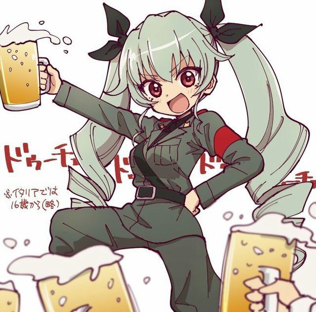

...404 bottles of beer. Take one down and pass it around, 403 bottles of beer on the wall.
403 bottles of beer on the wall, 403 bottles of beer. Take one down and pass it around, 402 bottles of beer on the wall.
402 bottles of beer on the wall, 402 bottles of beer. Take one down and pass it around, 401 bottles of beer on the wall.
401 bottles of beer on the wall, 401 bottles of beer. Take one down and pass it around, 400 bottles of beer on the wall.
400 bottles of beer on the wall, 400 bottles of beer. Take one down and pass it around, 399 bottles of beer on the wall.
399 bottles of beer on the wall, 399 bottles of beer. Take one down and pass it around, 398 bottles of beer on the wall.
398 bottles of beer on the wall, 398 bottles of beer. Take one down and pass it around, 397 bottles of beer on the wall.
397 bottles of beer on the wall, 397 bottles of beer. Take one down and pass it around, 396 bottles of beer on the wall.
396 bottles of beer on the wall, 396 bottles of beer. Take one down and pass it around, 395 bottles of beer on the wall.
395 bottles of beer on the wall, 395 bottles of beer. Take one down and pass it around, 394 bottles of beer on the wall.
394 bottles of beer on the wall, 394 bottles of beer. Take one down and pass it around, 393 bottles of beer on the wall.
393 bottles of beer on the wall, 393 bottles of beer. Take one down and pass it around, 392 bottles of beer on the wall.
392 bottles of beer on the wall, 392 bottles of beer. Take one down and pass it around, 391 bottles of beer on the wall.
391 bottles of beer on the wall, 391 bottles of beer. Take one down and pass it around, 390 bottles of beer on the wall.
390 bottles of beer on the wall, 390 bottles of beer. Take one down and pass it around, 389 bottles of beer on the wall.
389 bottles of beer on the wall, 389 bottles of beer. Take one down and pass it around, 388 bottles of beer on the wall.
388 bottles of beer on the wall, 388 bottles of beer. Take one down and pass it around, 387 bottles of beer on the wall.
387 bottles of beer on the wall, 387 bottles of beer. Take one down and pass it around, 386 bottles of beer on the wall.
386 bottles of beer on the wall, 386 bottles of beer. Take one down and pass it around, 385 bottles of beer on the wall.
385 bottles of beer on the wall, 385 bottles of beer. Take one down and pass it around, 384 bottles of beer on the wall.
384 bottles of beer on the wall, 384 bottles of beer. Take one down and pass it around, 383 bottles of beer on the wall.
383 bottles of beer on the wall, 383 bottles of beer. Take one down and pass it around, 382 bottles of beer on the wall.
382 bottles of beer on the wall, 382 bottles of beer. Take one down and pass it around, 381 bottles of beer on the wall.
381 bottles of beer on the wall, 381 bottles of beer. Take one down and pass it around, 380 bottles of beer on the wall.
380 bottles of beer on the wall, 380 bottles of beer. Take one down and pass it around, 379 bottles of beer on the wall.
379 bottles of beer on the wall, 379 bottles of beer. Take one down and pass it around, 378 bottles of beer on the wall.
378 bottles of beer on the wall, 378 bottles of beer. Take one down and pass it around, 377 bottles of beer on the wall.
377 bottles of beer on the wall, 377 bottles of beer. Take one down and pass it around, 376 bottles of beer on the wall.
376 bottles of beer on the wall, 376 bottles of beer. Take one down and pass it around, 375 bottles of beer on the wall.
375 bottles of beer on the wall, 375 bottles of beer. Take one down and pass it around, 374 bottles of beer on the wall.
374 bottles of beer on the wall, 374 bottles of beer. Take one down and pass it around, 373 bottles of beer on the wall.
373 bottles of beer on the wall, 373 bottles of beer. Take one down and pass it around, 372 bottles of beer on the wall.
372 bottles of beer on the wall, 372 bottles of beer. Take one down and pass it around, 371 bottles of beer on the wall.
371 bottles of beer on the wall, 371 bottles of beer. Take one down and pass it around, 370 bottles of beer on the wall.
370 bottles of beer on the wall, 370 bottles of beer. Take one down and pass it around, 369 bottles of beer on the wall.
369 bottles of beer on the wall, 369 bottles of beer. Take one down and pass it around, 368 bottles of beer on the wall.
368 bottles of beer on the wall, 368 bottles of beer. Take one down and pass it around, 367 bottles of beer on the wall.
367 bottles of beer on the wall, 367 bottles of beer. Take one down and pass it around, 366 bottles of beer on the wall.
366 bottles of beer on the wall, 366 bottles of beer. Take one down and pass it around, 365 bottles of beer on the wall.
365 bottles of beer on the wall, 365 bottles of beer. Take one down and pass it around, 364 bottles of beer on the wall.
364 bottles of beer on the wall, 364 bottles of beer. Take one down and pass it around, 363 bottles of beer on the wall.
363 bottles of beer on the wall, 363 bottles of beer. Take one down and pass it around, 362 bottles of beer on the wall.
362 bottles of beer on the wall, 362 bottles of beer. Take one down and pass it around, 361 bottles of beer on the wall.
361 bottles of beer on the wall, 361 bottles of beer. Take one down and pass it around, 360 bottles of beer on the wall.
360 bottles of beer on the wall, 360 bottles of beer. Take one down and pass it around, 359 bottles of beer on the wall.
359 bottles of beer on the wall, 359 bottles of beer. Take one down and pass it around, 358 bottles of beer on the wall.
358 bottles of beer on the wall, 358 bottles of beer. Take one down and pass it around, 357 bottles of beer on the wall.
357 bottles of beer on the wall, 357 bottles of beer. Take one down and pass it around, 356 bottles of beer on the wall.
356 bottles of beer on the wall, 356 bottles of beer. Take one down and pass it around, 355 bottles of beer on the wall.
355 bottles of beer on the wall, 355 bottles of beer. Take one down and pass it around, 354 bottles of beer on the wall.
354 bottles of beer on the wall, 354 bottles of beer. Take one down and pass it around, 353 bottles of beer on the wall.
353 bottles of beer on the wall, 353 bottles of beer. Take one down and pass it around, 352 bottles of beer on the wall.
352 bottles of beer on the wall, 352 bottles of beer. Take one down and pass it around, 351 bottles of beer on the wall.
351 bottles of beer on the wall, 351 bottles of beer. Take one down and pass it around, 350 bottles of beer on the wall.
350 bottles of beer on the wall, 350 bottles of beer. Take one down and pass it around, 349 bottles of beer on the wall.
349 bottles of beer on the wall, 349 bottles of beer. Take one down and pass it around, 348 bottles of beer on the wall.
348 bottles of beer on the wall, 348 bottles of beer. Take one down and pass it around, 347 bottles of beer on the wall.
347 bottles of beer on the wall, 347 bottles of beer. Take one down and pass it around, 346 bottles of beer on the wall.
346 bottles of beer on the wall, 346 bottles of beer. Take one down and pass it around, 345 bottles of beer on the wall.
345 bottles of beer on the wall, 345 bottles of beer. Take one down and pass it around, 344 bottles of beer on the wall.
344 bottles of beer on the wall, 344 bottles of beer. Take one down and pass it around, 343 bottles of beer on the wall.
343 bottles of beer on the wall, 343 bottles of beer. Take one down and pass it around, 342 bottles of beer on the wall.
342 bottles of beer on the wall, 342 bottles of beer. Take one down and pass it around, 341 bottles of beer on the wall.
341 bottles of beer on the wall, 341 bottles of beer. Take one down and pass it around, 340 bottles of beer on the wall.
340 bottles of beer on the wall, 340 bottles of beer. Take one down and pass it around, 339 bottles of beer on the wall.
339 bottles of beer on the wall, 339 bottles of beer. Take one down and pass it around, 338 bottles of beer on the wall.
338 bottles of beer on the wall, 338 bottles of beer. Take one down and pass it around, 337 bottles of beer on the wall.
337 bottles of beer on the wall, 337 bottles of beer. Take one down and pass it around, 336 bottles of beer on the wall.
336 bottles of beer on the wall, 336 bottles of beer. Take one down and pass it around, 335 bottles of beer on the wall.
335 bottles of beer on the wall, 335 bottles of beer. Take one down and pass it around, 334 bottles of beer on the wall.
334 bottles of beer on the wall, 334 bottles of beer. Take one down and pass it around, 333 bottles of beer on the wall.
333 bottles of beer on the wall, 333 bottles of beer. Take one down and pass it around, 332 bottles of beer on the wall.
332 bottles of beer on the wall, 332 bottles of beer. Take one down and pass it around, 331 bottles of beer on the wall.
331 bottles of beer on the wall, 331 bottles of beer. Take one down and pass it around, 330 bottles of beer on the wall.
330 bottles of beer on the wall, 330 bottles of beer. Take one down and pass it around, 329 bottles of beer on the wall.
329 bottles of beer on the wall, 329 bottles of beer. Take one down and pass it around, 328 bottles of beer on the wall.
328 bottles of beer on the wall, 328 bottles of beer. Take one down and pass it around, 327 bottles of beer on the wall.
327 bottles of beer on the wall, 327 bottles of beer. Take one down and pass it around, 326 bottles of beer on the wall.
326 bottles of beer on the wall, 326 bottles of beer. Take one down and pass it around, 325 bottles of beer on the wall.
325 bottles of beer on the wall, 325 bottles of beer. Take one down and pass it around, 324 bottles of beer on the wall.
324 bottles of beer on the wall, 324 bottles of beer. Take one down and pass it around, 323 bottles of beer on the wall.
323 bottles of beer on the wall, 323 bottles of beer. Take one down and pass it around, 322 bottles of beer on the wall.
322 bottles of beer on the wall, 322 bottles of beer. Take one down and pass it around, 321 bottles of beer on the wall.
321 bottles of beer on the wall, 321 bottles of beer. Take one down and pass it around, 320 bottles of beer on the wall.
320 bottles of beer on the wall, 320 bottles of beer. Take one down and pass it around, 319 bottles of beer on the wall.
319 bottles of beer on the wall, 319 bottles of beer. Take one down and pass it around, 318 bottles of beer on the wall.
318 bottles of beer on the wall, 318 bottles of beer. Take one down and pass it around, 317 bottles of beer on the wall.
317 bottles of beer on the wall, 317 bottles of beer. Take one down and pass it around, 316 bottles of beer on the wall.
316 bottles of beer on the wall, 316 bottles of beer. Take one down and pass it around, 315 bottles of beer on the wall.
315 bottles of beer on the wall, 315 bottles of beer. Take one down and pass it around, 314 bottles of beer on the wall.
314 bottles of beer on the wall, 314 bottles of beer. Take one down and pass it around, 313 bottles of beer on the wall.
313 bottles of beer on the wall, 313 bottles of beer. Take one down and pass it around, 312 bottles of beer on the wall.
312 bottles of beer on the wall, 312 bottles of beer. Take one down and pass it around, 311 bottles of beer on the wall.
311 bottles of beer on the wall, 311 bottles of beer. Take one down and pass it around, 310 bottles of beer on the wall.
310 bottles of beer on the wall, 310 bottles of beer. Take one down and pass it around, 309 bottles of beer on the wall.
309 bottles of beer on the wall, 309 bottles of beer. Take one down and pass it around, 308 bottles of beer on the wall.
308 bottles of beer on the wall, 308 bottles of beer. Take one down and pass it around, 307 bottles of beer on the wall.
307 bottles of beer on the wall, 307 bottles of beer. Take one down and pass it around, 306 bottles of beer on the wall.
306 bottles of beer on the wall, 306 bottles of beer. Take one down and pass it around, 305 bottles of beer on the wall.
305 bottles of beer on the wall, 305 bottles of beer. Take one down and pass it around, 304 bottles of beer on the wall.
304 bottles of beer on the wall, 304 bottles of beer. Take one down and pass it around, 303 bottles of beer on the wall.
303 bottles of beer on the wall, 303 bottles of beer. Take one down and pass it around, 302 bottles of beer on the wall.
302 bottles of beer on the wall, 302 bottles of beer. Take one down and pass it around, 301 bottles of beer on the wall.
301 bottles of beer on the wall, 301 bottles of beer. Take one down and pass it around, 300 bottles of beer on the wall.
300 bottles of beer on the wall, 300 bottles of beer. Take one down and pass it around, 299 bottles of beer on the wall.
299 bottles of beer on the wall, 299 bottles of beer. Take one down and pass it around, 298 bottles of beer on the wall.
298 bottles of beer on the wall, 298 bottles of beer. Take one down and pass it around, 297 bottles of beer on the wall.
297 bottles of beer on the wall, 297 bottles of beer. Take one down and pass it around, 296 bottles of beer on the wall.
296 bottles of beer on the wall, 296 bottles of beer. Take one down and pass it around, 295 bottles of beer on the wall.
295 bottles of beer on the wall, 295 bottles of beer. Take one down and pass it around, 294 bottles of beer on the wall.
294 bottles of beer on the wall, 294 bottles of beer. Take one down and pass it around, 293 bottles of beer on the wall.
293 bottles of beer on the wall, 293 bottles of beer. Take one down and pass it around, 292 bottles of beer on the wall.
292 bottles of beer on the wall, 292 bottles of beer. Take one down and pass it around, 291 bottles of beer on the wall.
291 bottles of beer on the wall, 291 bottles of beer. Take one down and pass it around, 290 bottles of beer on the wall.
290 bottles of beer on the wall, 290 bottles of beer. Take one down and pass it around, 289 bottles of beer on the wall.
289 bottles of beer on the wall, 289 bottles of beer. Take one down and pass it around, 288 bottles of beer on the wall.
288 bottles of beer on the wall, 288 bottles of beer. Take one down and pass it around, 287 bottles of beer on the wall.
287 bottles of beer on the wall, 287 bottles of beer. Take one down and pass it around, 286 bottles of beer on the wall.
286 bottles of beer on the wall, 286 bottles of beer. Take one down and pass it around, 285 bottles of beer on the wall.
285 bottles of beer on the wall, 285 bottles of beer. Take one down and pass it around, 284 bottles of beer on the wall.
284 bottles of beer on the wall, 284 bottles of beer. Take one down and pass it around, 283 bottles of beer on the wall.
283 bottles of beer on the wall, 283 bottles of beer. Take one down and pass it around, 282 bottles of beer on the wall.
282 bottles of beer on the wall, 282 bottles of beer. Take one down and pass it around, 281 bottles of beer on the wall.
281 bottles of beer on the wall, 281 bottles of beer. Take one down and pass it around, 280 bottles of beer on the wall.
280 bottles of beer on the wall, 280 bottles of beer. Take one down and pass it around, 279 bottles of beer on the wall.
279 bottles of beer on the wall, 279 bottles of beer. Take one down and pass it around, 278 bottles of beer on the wall.
278 bottles of beer on the wall, 278 bottles of beer. Take one down and pass it around, 277 bottles of beer on the wall.
277 bottles of beer on the wall, 277 bottles of beer. Take one down and pass it around, 276 bottles of beer on the wall.
276 bottles of beer on the wall, 276 bottles of beer. Take one down and pass it around, 275 bottles of beer on the wall.
275 bottles of beer on the wall, 275 bottles of beer. Take one down and pass it around, 274 bottles of beer on the wall.
274 bottles of beer on the wall, 274 bottles of beer. Take one down and pass it around, 273 bottles of beer on the wall.
273 bottles of beer on the wall, 273 bottles of beer. Take one down and pass it around, 272 bottles of beer on the wall.
272 bottles of beer on the wall, 272 bottles of beer. Take one down and pass it around, 271 bottles of beer on the wall.
271 bottles of beer on the wall, 271 bottles of beer. Take one down and pass it around, 270 bottles of beer on the wall.
270 bottles of beer on the wall, 270 bottles of beer. Take one down and pass it around, 269 bottles of beer on the wall.
269 bottles of beer on the wall, 269 bottles of beer. Take one down and pass it around, 268 bottles of beer on the wall.
268 bottles of beer on the wall, 268 bottles of beer. Take one down and pass it around, 267 bottles of beer on the wall.
267 bottles of beer on the wall, 267 bottles of beer. Take one down and pass it around, 266 bottles of beer on the wall.
266 bottles of beer on the wall, 266 bottles of beer. Take one down and pass it around, 265 bottles of beer on the wall.
265 bottles of beer on the wall, 265 bottles of beer. Take one down and pass it around, 264 bottles of beer on the wall.
264 bottles of beer on the wall, 264 bottles of beer. Take one down and pass it around, 263 bottles of beer on the wall.
263 bottles of beer on the wall, 263 bottles of beer. Take one down and pass it around, 262 bottles of beer on the wall.
262 bottles of beer on the wall, 262 bottles of beer. Take one down and pass it around, 261 bottles of beer on the wall.
261 bottles of beer on the wall, 261 bottles of beer. Take one down and pass it around, 260 bottles of beer on the wall.
260 bottles of beer on the wall, 260 bottles of beer. Take one down and pass it around, 259 bottles of beer on the wall.
259 bottles of beer on the wall, 259 bottles of beer. Take one down and pass it around, 258 bottles of beer on the wall.
258 bottles of beer on the wall, 258 bottles of beer. Take one down and pass it around, 257 bottles of beer on the wall.
257 bottles of beer on the wall, 257 bottles of beer. Take one down and pass it around, 256 bottles of beer on the wall.
256 bottles of beer on the wall, 256 bottles of beer. Take one down and pass it around, 255 bottles of beer on the wall.
255 bottles of beer on the wall, 255 bottles of beer. Take one down and pass it around, 254 bottles of beer on the wall.
254 bottles of beer on the wall, 254 bottles of beer. Take one down and pass it around, 253 bottles of beer on the wall.
253 bottles of beer on the wall, 253 bottles of beer. Take one down and pass it around, 252 bottles of beer on the wall.
252 bottles of beer on the wall, 252 bottles of beer. Take one down and pass it around, 251 bottles of beer on the wall.
251 bottles of beer on the wall, 251 bottles of beer. Take one down and pass it around, 250 bottles of beer on the wall.
250 bottles of beer on the wall, 250 bottles of beer. Take one down and pass it around, 249 bottles of beer on the wall.
249 bottles of beer on the wall, 249 bottles of beer. Take one down and pass it around, 248 bottles of beer on the wall.
248 bottles of beer on the wall, 248 bottles of beer. Take one down and pass it around, 247 bottles of beer on the wall.
247 bottles of beer on the wall, 247 bottles of beer. Take one down and pass it around, 246 bottles of beer on the wall.
246 bottles of beer on the wall, 246 bottles of beer. Take one down and pass it around, 245 bottles of beer on the wall.
245 bottles of beer on the wall, 245 bottles of beer. Take one down and pass it around, 244 bottles of beer on the wall.
244 bottles of beer on the wall, 244 bottles of beer. Take one down and pass it around, 243 bottles of beer on the wall.
243 bottles of beer on the wall, 243 bottles of beer. Take one down and pass it around, 242 bottles of beer on the wall.
242 bottles of beer on the wall, 242 bottles of beer. Take one down and pass it around, 241 bottles of beer on the wall.
241 bottles of beer on the wall, 241 bottles of beer. Take one down and pass it around, 240 bottles of beer on the wall.
240 bottles of beer on the wall, 240 bottles of beer. Take one down and pass it around, 239 bottles of beer on the wall.
239 bottles of beer on the wall, 239 bottles of beer. Take one down and pass it around, 238 bottles of beer on the wall.
238 bottles of beer on the wall, 238 bottles of beer. Take one down and pass it around, 237 bottles of beer on the wall.
237 bottles of beer on the wall, 237 bottles of beer. Take one down and pass it around, 236 bottles of beer on the wall.
236 bottles of beer on the wall, 236 bottles of beer. Take one down and pass it around, 235 bottles of beer on the wall.
235 bottles of beer on the wall, 235 bottles of beer. Take one down and pass it around, 234 bottles of beer on the wall.
234 bottles of beer on the wall, 234 bottles of beer. Take one down and pass it around, 233 bottles of beer on the wall.
233 bottles of beer on the wall, 233 bottles of beer. Take one down and pass it around, 232 bottles of beer on the wall.
232 bottles of beer on the wall, 232 bottles of beer. Take one down and pass it around, 231 bottles of beer on the wall.
231 bottles of beer on the wall, 231 bottles of beer. Take one down and pass it around, 230 bottles of beer on the wall.
230 bottles of beer on the wall, 230 bottles of beer. Take one down and pass it around, 229 bottles of beer on the wall.
229 bottles of beer on the wall, 229 bottles of beer. Take one down and pass it around, 228 bottles of beer on the wall.
228 bottles of beer on the wall, 228 bottles of beer. Take one down and pass it around, 227 bottles of beer on the wall.
227 bottles of beer on the wall, 227 bottles of beer. Take one down and pass it around, 226 bottles of beer on the wall.
226 bottles of beer on the wall, 226 bottles of beer. Take one down and pass it around, 225 bottles of beer on the wall.
225 bottles of beer on the wall, 225 bottles of beer. Take one down and pass it around, 224 bottles of beer on the wall.
224 bottles of beer on the wall, 224 bottles of beer. Take one down and pass it around, 223 bottles of beer on the wall.
223 bottles of beer on the wall, 223 bottles of beer. Take one down and pass it around, 222 bottles of beer on the wall.
222 bottles of beer on the wall, 222 bottles of beer. Take one down and pass it around, 221 bottles of beer on the wall.
221 bottles of beer on the wall, 221 bottles of beer. Take one down and pass it around, 220 bottles of beer on the wall.
220 bottles of beer on the wall, 220 bottles of beer. Take one down and pass it around, 219 bottles of beer on the wall.
219 bottles of beer on the wall, 219 bottles of beer. Take one down and pass it around, 218 bottles of beer on the wall.
218 bottles of beer on the wall, 218 bottles of beer. Take one down and pass it around, 217 bottles of beer on the wall.
217 bottles of beer on the wall, 217 bottles of beer. Take one down and pass it around, 216 bottles of beer on the wall.
216 bottles of beer on the wall, 216 bottles of beer. Take one down and pass it around, 215 bottles of beer on the wall.
215 bottles of beer on the wall, 215 bottles of beer. Take one down and pass it around, 214 bottles of beer on the wall.
214 bottles of beer on the wall, 214 bottles of beer. Take one down and pass it around, 213 bottles of beer on the wall.
213 bottles of beer on the wall, 213 bottles of beer. Take one down and pass it around, 212 bottles of beer on the wall.
212 bottles of beer on the wall, 212 bottles of beer. Take one down and pass it around, 211 bottles of beer on the wall.
211 bottles of beer on the wall, 211 bottles of beer. Take one down and pass it around, 210 bottles of beer on the wall.
210 bottles of beer on the wall, 210 bottles of beer. Take one down and pass it around, 209 bottles of beer on the wall.
209 bottles of beer on the wall, 209 bottles of beer. Take one down and pass it around, 208 bottles of beer on the wall.
208 bottles of beer on the wall, 208 bottles of beer. Take one down and pass it around, 207 bottles of beer on the wall.
207 bottles of beer on the wall, 207 bottles of beer. Take one down and pass it around, 206 bottles of beer on the wall.
206 bottles of beer on the wall, 206 bottles of beer. Take one down and pass it around, 205 bottles of beer on the wall.
205 bottles of beer on the wall, 205 bottles of beer. Take one down and pass it around, 204 bottles of beer on the wall.
204 bottles of beer on the wall, 204 bottles of beer. Take one down and pass it around, 203 bottles of beer on the wall.
203 bottles of beer on the wall, 203 bottles of beer. Take one down and pass it around, 202 bottles of beer on the wall.
202 bottles of beer on the wall, 202 bottles of beer. Take one down and pass it around, 201 bottles of beer on the wall.
201 bottles of beer on the wall, 201 bottles of beer. Take one down and pass it around, 200 bottles of beer on the wall.
200 bottles of beer on the wall, 200 bottles of beer. Take one down and pass it around, 199 bottles of beer on the wall.
199 bottles of beer on the wall, 199 bottles of beer. Take one down and pass it around, 198 bottles of beer on the wall.
198 bottles of beer on the wall, 198 bottles of beer. Take one down and pass it around, 197 bottles of beer on the wall.
197 bottles of beer on the wall, 197 bottles of beer. Take one down and pass it around, 196 bottles of beer on the wall.
196 bottles of beer on the wall, 196 bottles of beer. Take one down and pass it around, 195 bottles of beer on the wall.
195 bottles of beer on the wall, 195 bottles of beer. Take one down and pass it around, 194 bottles of beer on the wall.
194 bottles of beer on the wall, 194 bottles of beer. Take one down and pass it around, 193 bottles of beer on the wall.
193 bottles of beer on the wall, 193 bottles of beer. Take one down and pass it around, 192 bottles of beer on the wall.
192 bottles of beer on the wall, 192 bottles of beer. Take one down and pass it around, 191 bottles of beer on the wall.
191 bottles of beer on the wall, 191 bottles of beer. Take one down and pass it around, 190 bottles of beer on the wall.
190 bottles of beer on the wall, 190 bottles of beer. Take one down and pass it around, 189 bottles of beer on the wall.
189 bottles of beer on the wall, 189 bottles of beer. Take one down and pass it around, 188 bottles of beer on the wall.
188 bottles of beer on the wall, 188 bottles of beer. Take one down and pass it around, 187 bottles of beer on the wall.
187 bottles of beer on the wall, 187 bottles of beer. Take one down and pass it around, 186 bottles of beer on the wall.
186 bottles of beer on the wall, 186 bottles of beer. Take one down and pass it around, 185 bottles of beer on the wall.
185 bottles of beer on the wall, 185 bottles of beer. Take one down and pass it around, 184 bottles of beer on the wall.
184 bottles of beer on the wall, 184 bottles of beer. Take one down and pass it around, 183 bottles of beer on the wall.
183 bottles of beer on the wall, 183 bottles of beer. Take one down and pass it around, 182 bottles of beer on the wall.
182 bottles of beer on the wall, 182 bottles of beer. Take one down and pass it around, 181 bottles of beer on the wall.
181 bottles of beer on the wall, 181 bottles of beer. Take one down and pass it around, 180 bottles of beer on the wall.
180 bottles of beer on the wall, 180 bottles of beer. Take one down and pass it around, 179 bottles of beer on the wall.
179 bottles of beer on the wall, 179 bottles of beer. Take one down and pass it around, 178 bottles of beer on the wall.
178 bottles of beer on the wall, 178 bottles of beer. Take one down and pass it around, 177 bottles of beer on the wall.
177 bottles of beer on the wall, 177 bottles of beer. Take one down and pass it around, 176 bottles of beer on the wall.
176 bottles of beer on the wall, 176 bottles of beer. Take one down and pass it around, 175 bottles of beer on the wall.
175 bottles of beer on the wall, 175 bottles of beer. Take one down and pass it around, 174 bottles of beer on the wall.
174 bottles of beer on the wall, 174 bottles of beer. Take one down and pass it around, 173 bottles of beer on the wall.
173 bottles of beer on the wall, 173 bottles of beer. Take one down and pass it around, 172 bottles of beer on the wall.
172 bottles of beer on the wall, 172 bottles of beer. Take one down and pass it around, 171 bottles of beer on the wall.
171 bottles of beer on the wall, 171 bottles of beer. Take one down and pass it around, 170 bottles of beer on the wall.
170 bottles of beer on the wall, 170 bottles of beer. Take one down and pass it around, 169 bottles of beer on the wall.
169 bottles of beer on the wall, 169 bottles of beer. Take one down and pass it around, 168 bottles of beer on the wall.
168 bottles of beer on the wall, 168 bottles of beer. Take one down and pass it around, 167 bottles of beer on the wall.
167 bottles of beer on the wall, 167 bottles of beer. Take one down and pass it around, 166 bottles of beer on the wall.
166 bottles of beer on the wall, 166 bottles of beer. Take one down and pass it around, 165 bottles of beer on the wall.
165 bottles of beer on the wall, 165 bottles of beer. Take one down and pass it around, 164 bottles of beer on the wall.
164 bottles of beer on the wall, 164 bottles of beer. Take one down and pass it around, 163 bottles of beer on the wall.
163 bottles of beer on the wall, 163 bottles of beer. Take one down and pass it around, 162 bottles of beer on the wall.
162 bottles of beer on the wall, 162 bottles of beer. Take one down and pass it around, 161 bottles of beer on the wall.
161 bottles of beer on the wall, 161 bottles of beer. Take one down and pass it around, 160 bottles of beer on the wall.
160 bottles of beer on the wall, 160 bottles of beer. Take one down and pass it around, 159 bottles of beer on the wall.
159 bottles of beer on the wall, 159 bottles of beer. Take one down and pass it around, 158 bottles of beer on the wall.
158 bottles of beer on the wall, 158 bottles of beer. Take one down and pass it around, 157 bottles of beer on the wall.
157 bottles of beer on the wall, 157 bottles of beer. Take one down and pass it around, 156 bottles of beer on the wall.
156 bottles of beer on the wall, 156 bottles of beer. Take one down and pass it around, 155 bottles of beer on the wall.
155 bottles of beer on the wall, 155 bottles of beer. Take one down and pass it around, 154 bottles of beer on the wall.
154 bottles of beer on the wall, 154 bottles of beer. Take one down and pass it around, 153 bottles of beer on the wall.
153 bottles of beer on the wall, 153 bottles of beer. Take one down and pass it around, 152 bottles of beer on the wall.
152 bottles of beer on the wall, 152 bottles of beer. Take one down and pass it around, 151 bottles of beer on the wall.
151 bottles of beer on the wall, 151 bottles of beer. Take one down and pass it around, 150 bottles of beer on the wall.
150 bottles of beer on the wall, 150 bottles of beer. Take one down and pass it around, 149 bottles of beer on the wall.
149 bottles of beer on the wall, 149 bottles of beer. Take one down and pass it around, 148 bottles of beer on the wall.
148 bottles of beer on the wall, 148 bottles of beer. Take one down and pass it around, 147 bottles of beer on the wall.
147 bottles of beer on the wall, 147 bottles of beer. Take one down and pass it around, 146 bottles of beer on the wall.
146 bottles of beer on the wall, 146 bottles of beer. Take one down and pass it around, 145 bottles of beer on the wall.
145 bottles of beer on the wall, 145 bottles of beer. Take one down and pass it around, 144 bottles of beer on the wall.
144 bottles of beer on the wall, 144 bottles of beer. Take one down and pass it around, 143 bottles of beer on the wall.
143 bottles of beer on the wall, 143 bottles of beer. Take one down and pass it around, 142 bottles of beer on the wall.
142 bottles of beer on the wall, 142 bottles of beer. Take one down and pass it around, 141 bottles of beer on the wall.
141 bottles of beer on the wall, 141 bottles of beer. Take one down and pass it around, 140 bottles of beer on the wall.
140 bottles of beer on the wall, 140 bottles of beer. Take one down and pass it around, 139 bottles of beer on the wall.
139 bottles of beer on the wall, 139 bottles of beer. Take one down and pass it around, 138 bottles of beer on the wall.
138 bottles of beer on the wall, 138 bottles of beer. Take one down and pass it around, 137 bottles of beer on the wall.
137 bottles of beer on the wall, 137 bottles of beer. Take one down and pass it around, 136 bottles of beer on the wall.
136 bottles of beer on the wall, 136 bottles of beer. Take one down and pass it around, 135 bottles of beer on the wall.
135 bottles of beer on the wall, 135 bottles of beer. Take one down and pass it around, 134 bottles of beer on the wall.
134 bottles of beer on the wall, 134 bottles of beer. Take one down and pass it around, 133 bottles of beer on the wall.
133 bottles of beer on the wall, 133 bottles of beer. Take one down and pass it around, 132 bottles of beer on the wall.
132 bottles of beer on the wall, 132 bottles of beer. Take one down and pass it around, 131 bottles of beer on the wall.
131 bottles of beer on the wall, 131 bottles of beer. Take one down and pass it around, 130 bottles of beer on the wall.
130 bottles of beer on the wall, 130 bottles of beer. Take one down and pass it around, 129 bottles of beer on the wall.
129 bottles of beer on the wall, 129 bottles of beer. Take one down and pass it around, 128 bottles of beer on the wall.
128 bottles of beer on the wall, 128 bottles of beer. Take one down and pass it around, 127 bottles of beer on the wall.
127 bottles of beer on the wall, 127 bottles of beer. Take one down and pass it around, 126 bottles of beer on the wall.
126 bottles of beer on the wall, 126 bottles of beer. Take one down and pass it around, 125 bottles of beer on the wall.
125 bottles of beer on the wall, 125 bottles of beer. Take one down and pass it around, 124 bottles of beer on the wall.
124 bottles of beer on the wall, 124 bottles of beer. Take one down and pass it around, 123 bottles of beer on the wall.
123 bottles of beer on the wall, 123 bottles of beer. Take one down and pass it around, 122 bottles of beer on the wall.
122 bottles of beer on the wall, 122 bottles of beer. Take one down and pass it around, 121 bottles of beer on the wall.
121 bottles of beer on the wall, 121 bottles of beer. Take one down and pass it around, 120 bottles of beer on the wall.
120 bottles of beer on the wall, 120 bottles of beer. Take one down and pass it around, 119 bottles of beer on the wall.
119 bottles of beer on the wall, 119 bottles of beer. Take one down and pass it around, 118 bottles of beer on the wall.
118 bottles of beer on the wall, 118 bottles of beer. Take one down and pass it around, 117 bottles of beer on the wall.
117 bottles of beer on the wall, 117 bottles of beer. Take one down and pass it around, 116 bottles of beer on the wall.
116 bottles of beer on the wall, 116 bottles of beer. Take one down and pass it around, 115 bottles of beer on the wall.
115 bottles of beer on the wall, 115 bottles of beer. Take one down and pass it around, 114 bottles of beer on the wall.
114 bottles of beer on the wall, 114 bottles of beer. Take one down and pass it around, 113 bottles of beer on the wall.
113 bottles of beer on the wall, 113 bottles of beer. Take one down and pass it around, 112 bottles of beer on the wall.
112 bottles of beer on the wall, 112 bottles of beer. Take one down and pass it around, 111 bottles of beer on the wall.
111 bottles of beer on the wall, 111 bottles of beer. Take one down and pass it around, 110 bottles of beer on the wall.
110 bottles of beer on the wall, 110 bottles of beer. Take one down and pass it around, 109 bottles of beer on the wall.
109 bottles of beer on the wall, 109 bottles of beer. Take one down and pass it around, 108 bottles of beer on the wall.
108 bottles of beer on the wall, 108 bottles of beer. Take one down and pass it around, 107 bottles of beer on the wall.
107 bottles of beer on the wall, 107 bottles of beer. Take one down and pass it around, 106 bottles of beer on the wall.
106 bottles of beer on the wall, 106 bottles of beer. Take one down and pass it around, 105 bottles of beer on the wall.
105 bottles of beer on the wall, 105 bottles of beer. Take one down and pass it around, 104 bottles of beer on the wall.
104 bottles of beer on the wall, 104 bottles of beer. Take one down and pass it around, 103 bottles of beer on the wall.
103 bottles of beer on the wall, 103 bottles of beer. Take one down and pass it around, 102 bottles of beer on the wall.
102 bottles of beer on the wall, 102 bottles of beer. Take one down and pass it around, 101 bottles of beer on the wall.
101 bottles of beer on the wall, 101 bottles of beer. Take one down and pass it around, 100 bottles of beer on the wall.
100 bottles of beer on the wall, 100 bottles of beer. Take one down and pass it around, 99 bottles of beer on the wall.
99 bottles of beer on the wall, 99 bottles of beer. Take one down and pass it around, 98 bottles of beer on the wall.
98 bottles of beer on the wall, 98 bottles of beer. Take one down and pass it around, 97 bottles of beer on the wall.
97 bottles of beer on the wall, 97 bottles of beer. Take one down and pass it around, 96 bottles of beer on the wall.
96 bottles of beer on the wall, 96 bottles of beer. Take one down and pass it around, 95 bottles of beer on the wall.
95 bottles of beer on the wall, 95 bottles of beer. Take one down and pass it around, 94 bottles of beer on the wall.
94 bottles of beer on the wall, 94 bottles of beer. Take one down and pass it around, 93 bottles of beer on the wall.
93 bottles of beer on the wall, 93 bottles of beer. Take one down and pass it around, 92 bottles of beer on the wall.
92 bottles of beer on the wall, 92 bottles of beer. Take one down and pass it around, 91 bottles of beer on the wall.
91 bottles of beer on the wall, 91 bottles of beer. Take one down and pass it around, 90 bottles of beer on the wall.
90 bottles of beer on the wall, 90 bottles of beer. Take one down and pass it around, 89 bottles of beer on the wall.
89 bottles of beer on the wall, 89 bottles of beer. Take one down and pass it around, 88 bottles of beer on the wall.
88 bottles of beer on the wall, 88 bottles of beer. Take one down and pass it around, 87 bottles of beer on the wall.
87 bottles of beer on the wall, 87 bottles of beer. Take one down and pass it around, 86 bottles of beer on the wall.
86 bottles of beer on the wall, 86 bottles of beer. Take one down and pass it around, 85 bottles of beer on the wall.
85 bottles of beer on the wall, 85 bottles of beer. Take one down and pass it around, 84 bottles of beer on the wall.
84 bottles of beer on the wall, 84 bottles of beer. Take one down and pass it around, 83 bottles of beer on the wall.
83 bottles of beer on the wall, 83 bottles of beer. Take one down and pass it around, 82 bottles of beer on the wall.
82 bottles of beer on the wall, 82 bottles of beer. Take one down and pass it around, 81 bottles of beer on the wall.
81 bottles of beer on the wall, 81 bottles of beer. Take one down and pass it around, 80 bottles of beer on the wall.
80 bottles of beer on the wall, 80 bottles of beer. Take one down and pass it around, 79 bottles of beer on the wall.
79 bottles of beer on the wall, 79 bottles of beer. Take one down and pass it around, 78 bottles of beer on the wall.
78 bottles of beer on the wall, 78 bottles of beer. Take one down and pass it around, 77 bottles of beer on the wall.
77 bottles of beer on the wall, 77 bottles of beer. Take one down and pass it around, 76 bottles of beer on the wall.
76 bottles of beer on the wall, 76 bottles of beer. Take one down and pass it around, 75 bottles of beer on the wall.
75 bottles of beer on the wall, 75 bottles of beer. Take one down and pass it around, 74 bottles of beer on the wall.
74 bottles of beer on the wall, 74 bottles of beer. Take one down and pass it around, 73 bottles of beer on the wall.
73 bottles of beer on the wall, 73 bottles of beer. Take one down and pass it around, 72 bottles of beer on the wall.
72 bottles of beer on the wall, 72 bottles of beer. Take one down and pass it around, 71 bottles of beer on the wall.
71 bottles of beer on the wall, 71 bottles of beer. Take one down and pass it around, 70 bottles of beer on the wall.
70 bottles of beer on the wall, 70 bottles of beer. Take one down and pass it around, 69 bottles of beer on the wall.
69 bottles of beer on the wall, 69 bottles of beer. Take one down and pass it around, 68 bottles of beer on the wall.
68 bottles of beer on the wall, 68 bottles of beer. Take one down and pass it around, 67 bottles of beer on the wall.
67 bottles of beer on the wall, 67 bottles of beer. Take one down and pass it around, 66 bottles of beer on the wall.
66 bottles of beer on the wall, 66 bottles of beer. Take one down and pass it around, 65 bottles of beer on the wall.
65 bottles of beer on the wall, 65 bottles of beer. Take one down and pass it around, 64 bottles of beer on the wall.
64 bottles of beer on the wall, 64 bottles of beer. Take one down and pass it around, 63 bottles of beer on the wall.
63 bottles of beer on the wall, 63 bottles of beer. Take one down and pass it around, 62 bottles of beer on the wall.
62 bottles of beer on the wall, 62 bottles of beer. Take one down and pass it around, 61 bottles of beer on the wall.
61 bottles of beer on the wall, 61 bottles of beer. Take one down and pass it around, 60 bottles of beer on the wall.
60 bottles of beer on the wall, 60 bottles of beer. Take one down and pass it around, 59 bottles of beer on the wall.
59 bottles of beer on the wall, 59 bottles of beer. Take one down and pass it around, 58 bottles of beer on the wall.
58 bottles of beer on the wall, 58 bottles of beer. Take one down and pass it around, 57 bottles of beer on the wall.
57 bottles of beer on the wall, 57 bottles of beer. Take one down and pass it around, 56 bottles of beer on the wall.
56 bottles of beer on the wall, 56 bottles of beer. Take one down and pass it around, 55 bottles of beer on the wall.
55 bottles of beer on the wall, 55 bottles of beer. Take one down and pass it around, 54 bottles of beer on the wall.
54 bottles of beer on the wall, 54 bottles of beer. Take one down and pass it around, 53 bottles of beer on the wall.
53 bottles of beer on the wall, 53 bottles of beer. Take one down and pass it around, 52 bottles of beer on the wall.
52 bottles of beer on the wall, 52 bottles of beer. Take one down and pass it around, 51 bottles of beer on the wall.
51 bottles of beer on the wall, 51 bottles of beer. Take one down and pass it around, 50 bottles of beer on the wall.
50 bottles of beer on the wall, 50 bottles of beer. Take one down and pass it around, 49 bottles of beer on the wall.
49 bottles of beer on the wall, 49 bottles of beer. Take one down and pass it around, 48 bottles of beer on the wall.
48 bottles of beer on the wall, 48 bottles of beer. Take one down and pass it around, 47 bottles of beer on the wall.
47 bottles of beer on the wall, 47 bottles of beer. Take one down and pass it around, 46 bottles of beer on the wall.
46 bottles of beer on the wall, 46 bottles of beer. Take one down and pass it around, 45 bottles of beer on the wall.
45 bottles of beer on the wall, 45 bottles of beer. Take one down and pass it around, 44 bottles of beer on the wall.
44 bottles of beer on the wall, 44 bottles of beer. Take one down and pass it around, 43 bottles of beer on the wall.
43 bottles of beer on the wall, 43 bottles of beer. Take one down and pass it around, 42 bottles of beer on the wall.
42 bottles of beer on the wall, 42 bottles of beer. Take one down and pass it around, 41 bottles of beer on the wall.
41 bottles of beer on the wall, 41 bottles of beer. Take one down and pass it around, 40 bottles of beer on the wall.
40 bottles of beer on the wall, 40 bottles of beer. Take one down and pass it around, 39 bottles of beer on the wall.
39 bottles of beer on the wall, 39 bottles of beer. Take one down and pass it around, 38 bottles of beer on the wall.
38 bottles of beer on the wall, 38 bottles of beer. Take one down and pass it around, 37 bottles of beer on the wall.
37 bottles of beer on the wall, 37 bottles of beer. Take one down and pass it around, 36 bottles of beer on the wall.
36 bottles of beer on the wall, 36 bottles of beer. Take one down and pass it around, 35 bottles of beer on the wall.
35 bottles of beer on the wall, 35 bottles of beer. Take one down and pass it around, 34 bottles of beer on the wall.
34 bottles of beer on the wall, 34 bottles of beer. Take one down and pass it around, 33 bottles of beer on the wall.
33 bottles of beer on the wall, 33 bottles of beer. Take one down and pass it around, 32 bottles of beer on the wall.
32 bottles of beer on the wall, 32 bottles of beer. Take one down and pass it around, 31 bottles of beer on the wall.
31 bottles of beer on the wall, 31 bottles of beer. Take one down and pass it around, 30 bottles of beer on the wall.
30 bottles of beer on the wall, 30 bottles of beer. Take one down and pass it around, 29 bottles of beer on the wall.
29 bottles of beer on the wall, 29 bottles of beer. Take one down and pass it around, 28 bottles of beer on the wall.
28 bottles of beer on the wall, 28 bottles of beer. Take one down and pass it around, 27 bottles of beer on the wall.
27 bottles of beer on the wall, 27 bottles of beer. Take one down and pass it around, 26 bottles of beer on the wall.
26 bottles of beer on the wall, 26 bottles of beer. Take one down and pass it around, 25 bottles of beer on the wall.
25 bottles of beer on the wall, 25 bottles of beer. Take one down and pass it around, 24 bottles of beer on the wall.
24 bottles of beer on the wall, 24 bottles of beer. Take one down and pass it around, 23 bottles of beer on the wall.
23 bottles of beer on the wall, 23 bottles of beer. Take one down and pass it around, 22 bottles of beer on the wall.
22 bottles of beer on the wall, 22 bottles of beer. Take one down and pass it around, 21 bottles of beer on the wall.
21 bottles of beer on the wall, 21 bottles of beer. Take one down and pass it around, 20 bottles of beer on the wall.
20 bottles of beer on the wall, 20 bottles of beer. Take one down and pass it around, 19 bottles of beer on the wall.
19 bottles of beer on the wall, 19 bottles of beer. Take one down and pass it around, 18 bottles of beer on the wall.
18 bottles of beer on the wall, 18 bottles of beer. Take one down and pass it around, 17 bottles of beer on the wall.
17 bottles of beer on the wall, 17 bottles of beer. Take one down and pass it around, 16 bottles of beer on the wall.
16 bottles of beer on the wall, 16 bottles of beer. Take one down and pass it around, 15 bottles of beer on the wall.
15 bottles of beer on the wall, 15 bottles of beer. Take one down and pass it around, 14 bottles of beer on the wall.
14 bottles of beer on the wall, 14 bottles of beer. Take one down and pass it around, 13 bottles of beer on the wall.
13 bottles of beer on the wall, 13 bottles of beer. Take one down and pass it around, 12 bottles of beer on the wall.
12 bottles of beer on the wall, 12 bottles of beer. Take one down and pass it around, 11 bottles of beer on the wall.
11 bottles of beer on the wall, 11 bottles of beer. Take one down and pass it around, 10 bottles of beer on the wall.
10 bottles of beer on the wall, 10 bottles of beer. Take one down and pass it around, 9 bottles of beer on the wall.
9 bottles of beer on the wall, 9 bottles of beer. Take one down and pass it around, 8 bottles of beer on the wall.
8 bottles of beer on the wall, 8 bottles of beer. Take one down and pass it around, 7 bottles of beer on the wall.
7 bottles of beer on the wall, 7 bottles of beer. Take one down and pass it around, 6 bottles of beer on the wall.
6 bottles of beer on the wall, 6 bottles of beer. Take one down and pass it around, 5 bottles of beer on the wall.
5 bottles of beer on the wall, 5 bottles of beer. Take one down and pass it around, 4 bottles of beer on the wall.
4 bottles of beer on the wall, 4 bottles of beer. Take one down and pass it around, 3 bottles of beer on the wall.
3 bottles of beer on the wall, 3 bottles of beer. Take one down and pass it around, 2 bottles of beer on the wall.
2 bottles of beer on the wall, 2 bottles of beer. Take one down and pass it around, 1 bottle of beer on the wall.
1 bottles of beer on the wall, 1 bottles of beer. Take one down and pass it around, no more bottles of beer on the wall.
No more bottles of beer on the wall, no more bottles of beer. Go to the store and buy some more, 404 bottles of beer on the wall! [BUY SOME MORE] | [RETURN HOME]